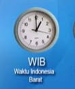
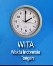
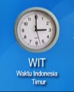

Republik Indonesia adalah salah satu Negara terluas di
Dunia yang terletak di Asia Tenggara. Luas wilayah Republik Indonesia yang mencapai 1,9 juta km2
ini terbentang dari 95 derajat Bujur Timur hingga 141 derajat Bujur Timur sehingga diperlukannya pembagian waktu menjadi 3 Zona
Waktu.
Berdasarkan Keputusan Presiden (Kepres) No. 41 tahun 1987, Negara Kesatuan Republik Indonesia (NKRI)
dibagi menjadi 3 (tiga) Zona waktu yaitu Waktu Indonesia Barat (WIB), Waktu Indonesia Tengah (WITA)
dan Waktu Indonesia Timur (WIT).Seperti yang kita ketahui, Negara memerlukan wilayah, dan setiap wilayah yang
dimiliki suatu negara tentunya juga memiliki batasan. Batas Wilayah Negara digunakan untuk mengatur dan menandai
peraturan dari negara yang bersangkutan. Indonesia juga memiliki batas wilayah untuk memisahkan wilayah Negara
Indonesia dan Negara lain.
Republik Indonesia adalah salah satu Negara terluas di
Dunia yang terletak di Asia Tenggara. Luas wilayah Republik Indonesia yang mencapai 1,9 juta km2
ini terbentang dari 95 derajat Bujur Timur hingga 141 derajat Bujur Timur sehingga diperlukannya pembagian waktu menjadi 3 Zona
Waktu.
Berdasarkan Keputusan Presiden (Kepres) No. 41 tahun 1987, Negara Kesatuan Republik Indonesia (NKRI)
dibagi menjadi 3 (tiga) Zona waktu yaitu Waktu Indonesia Barat (WIB), Waktu Indonesia Tengah (WITA)
dan Waktu Indonesia Timur (WIT).Seperti yang kita ketahui, Negara memerlukan wilayah, dan setiap wilayah yang
dimiliki suatu negara tentunya juga memiliki batasan. Batas Wilayah Negara digunakan untuk mengatur dan menandai
peraturan dari negara yang bersangkutan. Indonesia juga memiliki batas wilayah untuk memisahkan wilayah Negara
Indonesia dan Negara lain.
Telah diatur didalam Amandemen UUD RI tahun 1945 Bab IX A tentang Wilayah Negara, Pasal 25 A Menegaskan bahwa "Negara Kesatuan Republik Indonesia adalah sebuah negara kepulauan yang berciri nusantara dengan wilayah yang batas-batas dan hak-haknya ditetapkan dengan undang-undang". Dari bunyi pasal tersebut dapat ditarik kesimpulan bahwa Negara Indonesia merupakan Negara Kepulauan dan Nusantara, Maka dari itu batas wilayah laut Indonesia haruslah mengacu pada UNCLOS (United Nations Convension on the Law of the Sea) 82 atau Hukum Laut (HUKLA) 82 yang kemudian diratifikasi oleh UUD No. 17 Tahun 1985.

Waktu Indonesia Barat atau disingkat dengan WIB terbentang sepanjang garis 105derajat Bujur Timur
yang mencakup pulau Jawa, pulau Madura, pulau Sumatera, pulau Kalimantan bagian barat dan tengah.
Waktu Indonesia Barat (WIB) ini sama dengan pembagian waktu internasional UTC +7 atau GMT +7.
Provinsi-provinsi yang termasuk dalam Zona Waktu Indonesia Barat (WIB) adalah sebagai berikut :
1. Provinsi Nangroe Aceh Darusslam
2. Provinsi Sumatera Utara
3. Provinsi Sumatera Barat
4. Provinsi Riau
5. Provinsi Kepulauan Riau
6. Provinsi Jambi
7. Provinsi Sumatera Selatan
8. Provinsi Lampung
10. Provinsi Bangka Belitung
11. Provinsi Bengkulu
12. Provinsi DKI Jakarta
13. Provinsi Jawa Barat
14. Provinsi Banten
15. Provinsi Jawa Tengah
16. Provinsi DI Yogyakarta
17. Provinsi Jawa Timur
18. Provinsi Kalimantan Barat
17. Provinsi Kalimantan Tengah
Selanjutnya>>>
Waktu Indonesia Tengah atau disingkat dengan WITA terbentang sepanjang garis 120derajat Bujur Timur
yang mencakup Pulau Sulawesi, Pulau Bali, Pulau Kalimantan bagian Utara,
Timur dan Selatan serta wilayah Nusa Tenggara Timur (NTT) dan wilayah Nusa Tenggara Barat (NTB).
Waktu Indonesia Tengah (WITA) ini sama dengan pembagianwaktu Internasional UTC +8 atau GMT +8.
Provinsi-provinsi yang termasuk dalam Zona Waktu Indonesia Tengah (WITA) diantaranya adalah :
1. Provinsi Kalimantan Utara

Waktu Indonesia Timur atau disingkat dengan WIT terbentang sepanjang garis 135derajat Bujur Timur
yang mencakup pulau Papua dan Kepulauan Maluku. Waktu Indonesia Timur ini sama dengan pembagian
waktu Internasional UTC +9 atau GMT +9.
Provinsi-provinsi yang berada dalam Zona Waktu Indonesia Timur adaalh sebagai berikut :
1. Maluku
2. Provinsi Maluku Utara
3. Provinsi Papua
4. Provinsi Papua Barat
Selanjutnya>>>